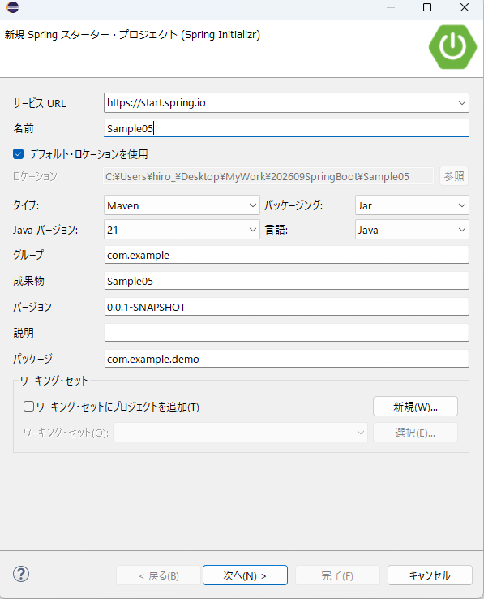
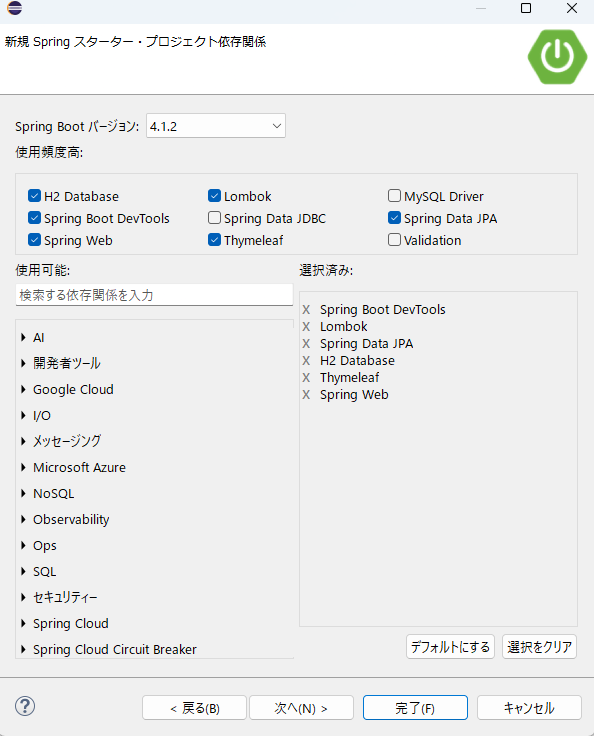
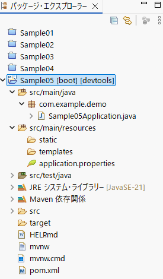
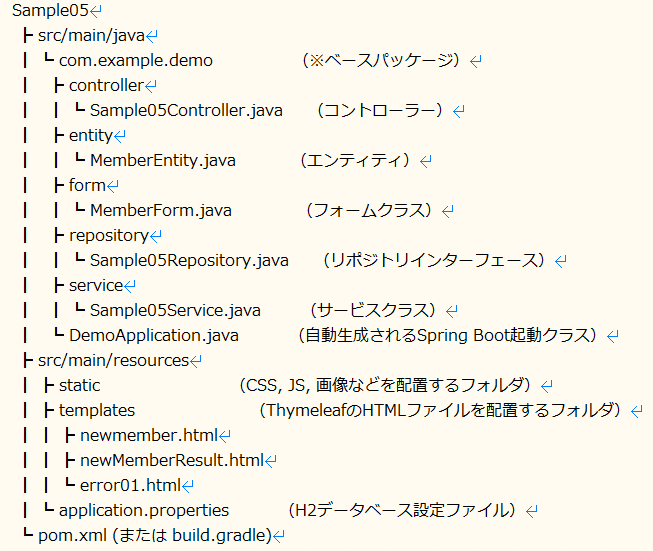

Spring Data JPA
1. Spring Data JPA とは？
Spring Data JPAは、Javaの永続化フレームワークであるJPA（Java Persistence API）のボイラープレート（定型的なコード）を大幅に削減し、リレーショナルデータベースへのアクセスを極めてシンプルに行うためのSpring Frameworkのモジュールです。しかし、Spring Data JPAを利用すると、「インタフェースを定義するだけで、基本的なCRUD操作やクエリが自動生成される」という強力な恩恵を受けられます。
２，Eclipse (Spring Initializr)の設定
| 項番 | 設定 | 解説 |
|---|---|---|
| １ |
 |
プロジェクト名：Sample05 青枠は、確認してください。 特に、タイプ： |
| ２ |
 |
依存関係（Dependencies）を追加します。
１，Spring Boot DevTools：開発を効率的に進めるための便利な機能を集めた開発者向けツール（モジュール） |
| ３ |
 |
最初のパッケージ構成です。開発上、いくつかパッケージを作成して頂きます。 |
| ４ |
 |
最終的なパッケージ構成です。 |
３，H2データベース設定
H2データベースの設定例です。上記のファイルにデータベースの設定を書き込んでください。
他のDB（以降、データベースをDBと表記します）も同様の設定をしますが、設定がわからない場合は優秀なAIさんに聞いて見てください。
spring.datasource.driverClassName=org.h2.Driver
spring.datasource.username=sa
spring.datasource.password=
spring.jpa.database-platform=org.hibernate.dialect.H2Dialect
spring.jpa.hibernate.ddl-auto=update
spring.h2.console.enabled=true
４，フォームクラス (com/example/demo/form/MemberForm.java)
Lombokの @Data を使用したフォーム定義です。
Spring BootをはじめとするWebアプリケーション開発において、フォームクラス（Form）は、「ブラウザ（ユーザー）から送信されたデータを受け取り、画面とサーバーの間でやり取りするための専用クラス」です。
Spring MVCの Modelになります。コントローラーから画面（HTML）へ、そのデータを「運ぶためのトレイや入れ物」。
package com.example.demo.form;
import lombok.Data;
@Data
public class MemberForm {
private String kanjiSei; // 漢字姓
private String kanjiMei; // 漢字名
private String kanaSei; // カナ姓
private String kanaMei; // カナ名
private String birthDate; // 生年月日(yyyy-mm-dd 形式)
private String age; // 年齢
private String postalCode; // 郵便番号
private String address; // 住所
}
このアノテーションをクラスに付けると、
1. フィールドのGetter/Setterメソッド
2. toString()メソッド
3. equals()メソッド
4. hashCode()メソッド
5. コンストラクタ（引数なし）
が自動的に生成されます。
これにより、コードの冗長性が減り、可読性が向上します。
エンティティクラス (com/example/demo/entity/MemberEntity.java)
H2データベースのテーブルとマッピングするためのEntityクラスです。
Spring Boot（およびJPA / Hibernate）におけるエンティティクラス（Entity）は、「データベースのテーブルと、Javaのオブジェクト（インスタンス）を1対1で対応づけるためのクラス」です。
オブジェクト指向のプログラム（Java）と、リレーショナルデータベース（H2やMySQLなど）の橋渡しをする最も重要な役割を持っています。
Spring Bootでのテーブル自動生成の仕組み
Spring Boot（Spring Data JPAとHibernate）を使用している場合、設定を行うことでアプリケーションの起動時にエンティティークラス（@Entity）を読み取り、対応するデータベースのテーブルを自動で作成・更新することができます。
package com.example.demo.entity;
import jakarta.persistence.Entity;
import jakarta.persistence.GeneratedValue;
import jakarta.persistence.GenerationType;
import jakarta.persistence.Id;
import jakarta.persistence.Table;
import lombok.Data;
@Entity
@Table(name = "members")
@Data
public class MemberEntity {
@Id
@GeneratedValue(strategy = GenerationType.IDENTITY)
private Long id;
private String kanjiSei;
private String kanjiMei;
private String kanaSei;
private String kanaMei;
private String birthDate;
private String age;
private String postalCode;
private String address;
}
| 項番 | 設定 | 解説 |
|---|---|---|
| １ | @Entity | これがないとSpring Boot（JPA）がデータベース用クラスとして認識してくれません。 |
| ２ | @Table(name = "テーブル名") |
Javaのクラス名とデータベースのテーブル名が異なる場合や、明示的に指定したい場合に記述します。 |
| ３ | @Id | 最初のパッケージ構成です。開発上、いくつかパッケージを作成して頂きます。 |
| ４ | @GeneratedValue | IDの自動採番ルールを指定します（IDENTITYはデータベース側に自動採番をお任せする設定です）。 |
| ５ | @Column(name = "カラム名") | （必要に応じて）Javaのフィールド名とDBのカラム名が異なる場合や、NOT NULL制約・長さなどを指定したい場合に付けます（一致している場合は省略可能）。 |
| 項番 | 項目 | フォームクラス (MemberForm) | エンティティクラス (MemberEntity) |
|---|---|---|---|
| １ | 主な役割 | 画面（HTML）とコントローラー間でのデータの受け渡し | データベース（DB）のテーブルと1対1でのデータの保存・管理 |
| ２ | データの形式 |
全て String などで受け取ることが多い |
DBの型（数値、日付、文字列など）やリレーションを正確に反映する |
| ３ | ライフサイクル | リクエスト単位で生成・破棄される | DB永続化やトランザクションの文脈で長く扱われる |
- フォームでブラウザから値を受け取る
- サービスクラスで年齢などを計算する
- フォームの値をエンティティに詰め替えて、リポジトリ経由でDBに保存する